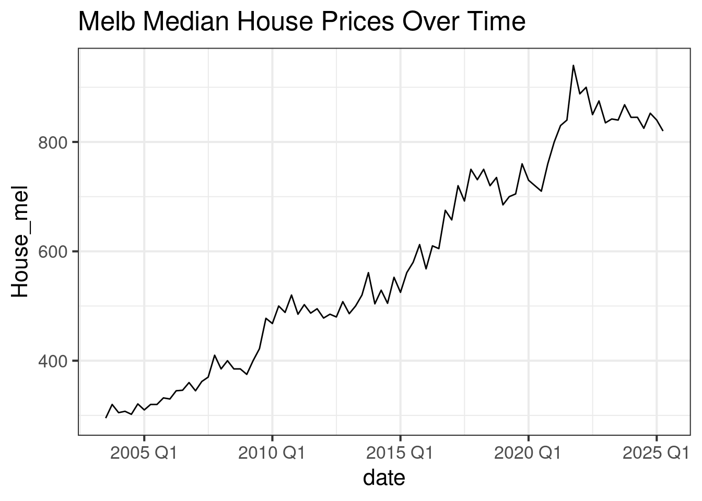
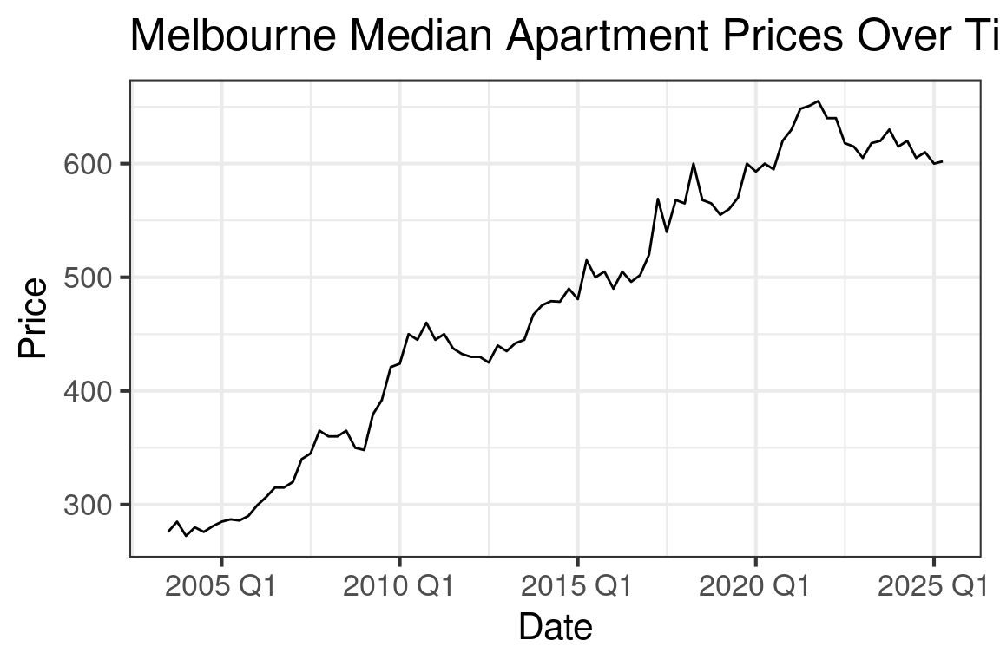
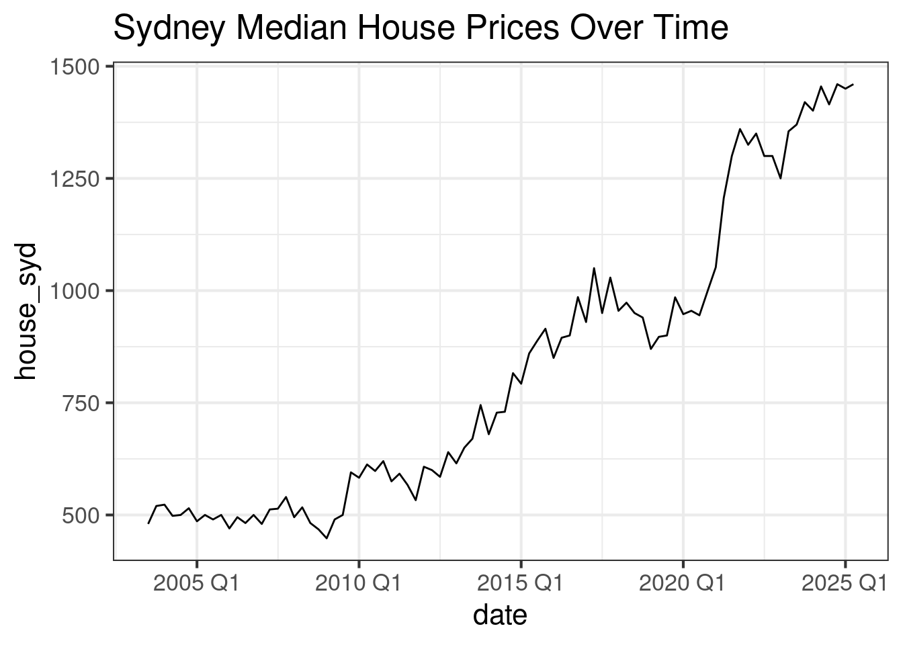
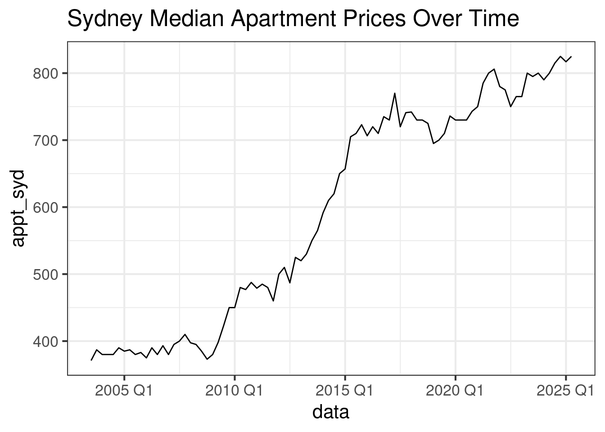
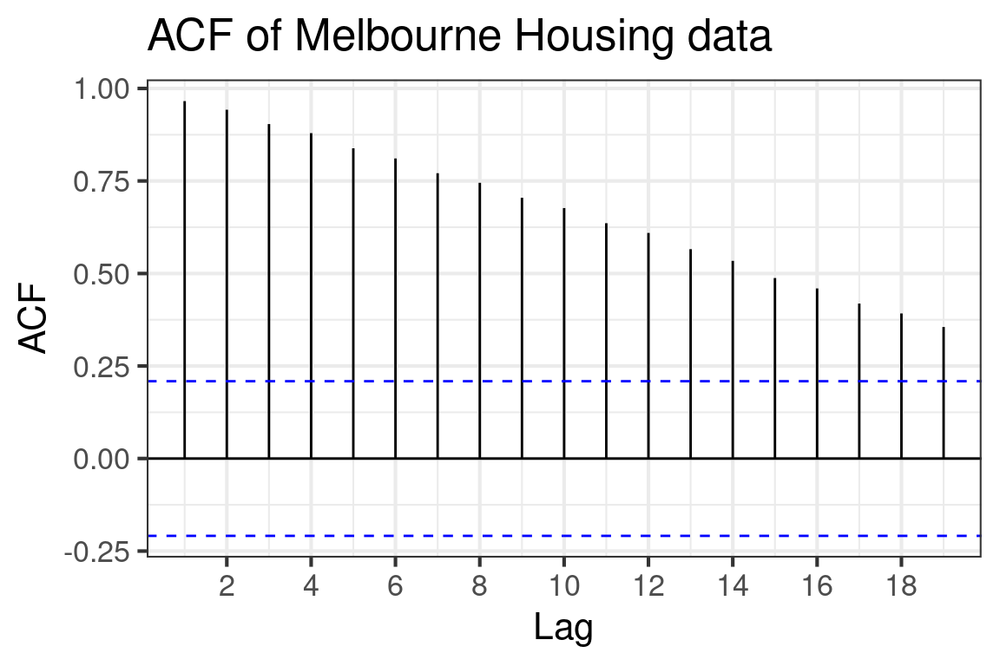
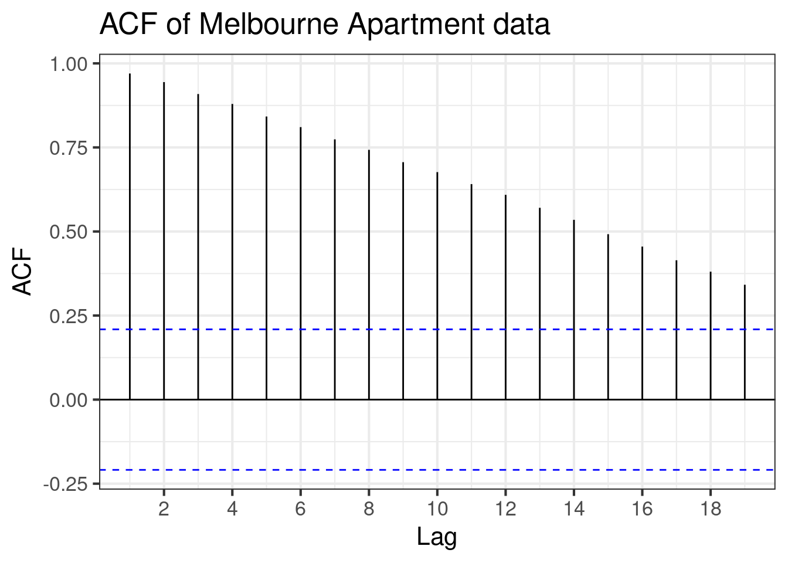
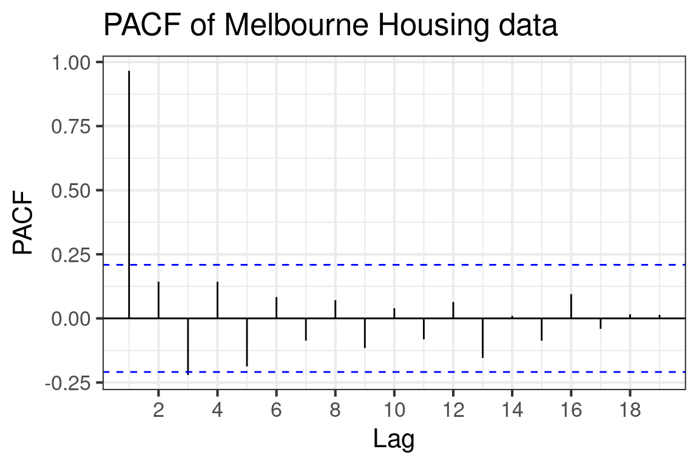
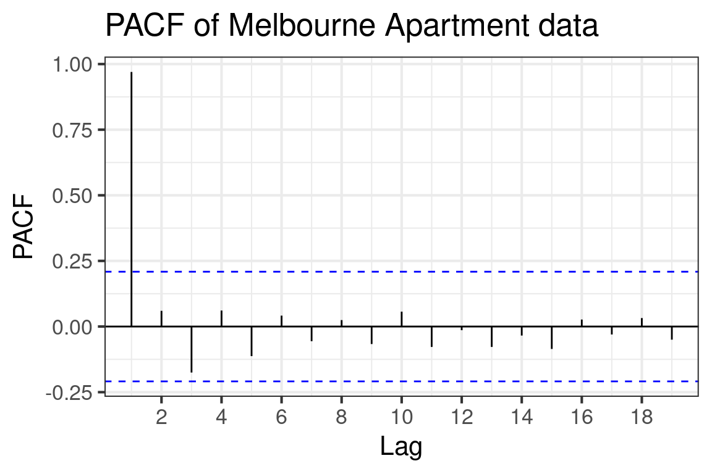

Code
renv::load("Assignment2")
setwd("Assignment2")renv::load("Assignment2")
setwd("Assignment2")library(tidyverse)
library(tsibble)
library(feasts)
library(dplyr)
library(urca)
library(tseries)
theme_set(theme_bw(base_size = 16))
housingdata <- read_csv("./housingdata.csv") |>
tibble() |>
mutate(date=yearquarter(date)) |>
as_tsibble()Determine whether series are stationary (use visualisation and hypothesis tests)
housingdata |>
ggplot(aes(x=date,y=house_mel)) +
labs(x="data", y="House_mel", title='Melb Median House Prices Over Time') +
geom_line()
housingdata |>
ggplot(aes(x=date,y=appt_mel)) +
labs(x="data", y="appt_mel", title='Melb Median Apartment Prices Over Time') +
geom_line()
housingdata |>
ggplot(aes(x=date,y=house_syd)) +
labs(x="data", y="house_syd", title='Sydney Median House Prices Over Time') +
geom_line()
housingdata |>
ggplot(aes(x=date,y=appt_syd)) +
labs(x="data", y="appt_syd", title='Sydney Median Apartment Prices Over Time') +
geom_line()



Visually, all series look non-stationary as their means are clearly time dependent and all series exhibit an upwards trend. Doesn’t seem to be any seasonality.
ACF(housingdata, house_mel) |>
autoplot() +
labs(x="Lag", y="ACF", title="ACF of Melbourne Housing data")
PACF(housingdata, house_mel) |>
autoplot() +
labs(x="Lag", y="PACF", title="PACF of Melbourne Housing data")
# ADF test (hm_ stands for homes melbourne)
hm_adf_result <- ur.df(housingdata$house_mel, type = "drift", selectlags = "AIC")
hm_adf_result_sum <- summary(hm_adf_result)
hm_adf_teststat <- round(hm_adf_result_sum@teststat[1], 2)
hm_adf_cval <- round(hm_adf_result_sum@cval[1,2], 2)
#KPSS test
hm_kpss_result <- kpss.test(na.omit(housingdata$house_mel))
hm_kpss_pval <- round(hm_kpss_result$p.value, 2)

For the ADF test: The \(\tau\) statistic was given as \(-0.6\), which is greater than the critical value of \(-2.89\) at the \(5\%\) significance level. Thus, we fail to reject \(H_0\) and conclude that the series may have a unit root and differencing is necessary.
For the KPSS test: the \(p\)-value was given as \(0.01\), so we reject the null in favour of the series being non stationary, which supports the conclusion from the ADF test.
From the PACF, the strong spike at lag \(1\) suggests the presence of persistence in the series, which is consistent with non-stationary behaviour. Combined with formal unit root tests, this indicates that the series likely becomes stationary after first order differencing. Therefore, the Melbourne housing series is likely \(I(1)\).
Does the housing difference likely need only a first order differencing? How do we know it doesn’t need 2?
ACF(housingdata, appt_mel) |>
autoplot() +
labs(x="Lag", y="ACF", title="ACF of Melbourne Apartment data")
PACF(housingdata, appt_mel) |>
autoplot() +
labs(x="Lag", y="PACF", title="PACF of Melbourne Apartment data")
# ADF test (am_ stands for apartments melbourne)
am_adf_result <- ur.df(housingdata$appt_mel, type = "drift", selectlags = "AIC")
am_adf_result_sum <- summary(am_adf_result)
am_adf_teststat <- round(am_adf_result_sum@teststat[1], 2)
am_adf_cval <- round(am_adf_result_sum@cval[1,2], 2)
#KPSS test
am_kpss_result <- kpss.test(na.omit(housingdata$appt_mel))
am_kpss_pval <- round(am_kpss_result$p.value, 2)

For the ADF test: The \(\tau\) statistic was given as \(-1.35\), which is greater than the critical value of \(-2.89\) at the \(5\%\) significance level. Thus, we fail to reject \(H_0\) and conclude that the series may have a unit root and differencing is necessary.
For the KPSS test: the \(p\)-value was given as \(0.01\), so we reject the null in favour of the series being non stationary, which supports the conclusion from the ADF test.
From the PACF, the strong spike at lag \(1\) suggests the presence of persistence in the series, which is consistent with non-stationary behaviour. Combined with formal unit root tests, this indicates that the series likely becomes stationary after first differencing. Therefore, the Melbourne apartment series is likely \(I(1)\).
Like before Does the apartments price differencing likely need only a first order differencing? How do we know it doesn’t need 2?